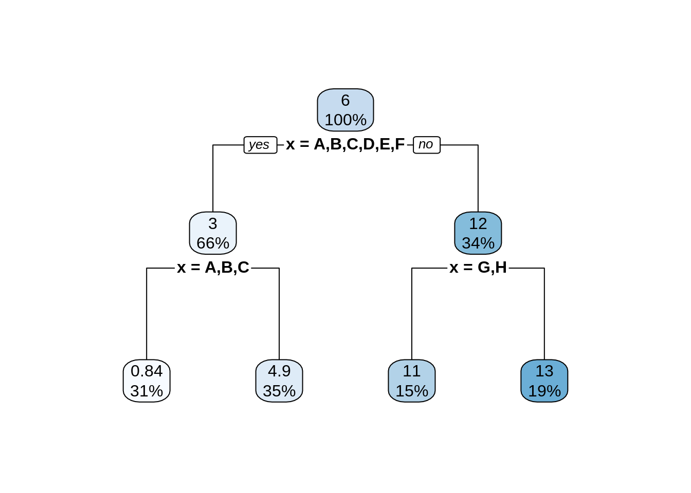
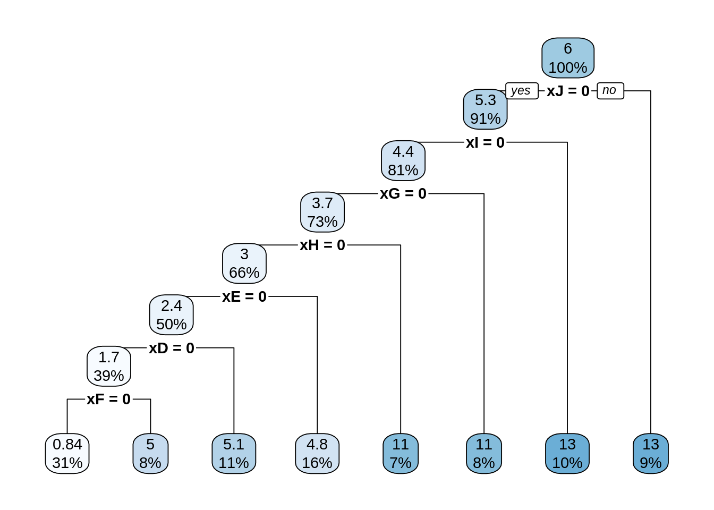

Chapter 16 Practical Issues
16.2 Feature Scaling
# generate date with x1 and x2 on very different scales
gen_reg_data = function(sample_size = 250, beta_1 = 1, beta_2 = 1) {
x_1 = runif(n = sample_size, min = 0, max = 1)
x_2 = runif(n = sample_size, min = 0, max = 1000)
y = beta_1 * x_1 + beta_2 * x_2 + rnorm(n = sample_size)
tibble(x_1 = x_1, x_2 = x_2, y = y)
}# generate train and test sets
set.seed(42)
trn = gen_reg_data(beta_1 = 10, beta_2 = 0.001)
tst = gen_reg_data(beta_1 = 10, beta_2 = 0.001)## # A tibble: 250 x 5
## x_1 x_2 y x1_scaled[,1] x2_scaled[,1]
## <dbl> <dbl> <dbl> <dbl> <dbl>
## 1 0.915 334. 8.39 1.39 -0.462
## 2 0.937 188. 9.61 1.47 -0.958
## 3 0.286 270. 1.93 -0.765 -0.681
## 4 0.830 531. 9.03 1.10 0.207
## 5 0.642 21.5 7.74 0.455 -1.53
## 6 0.519 799. 4.96 0.0340 1.12
## 7 0.737 110. 6.74 0.780 -1.22
## 8 0.135 540. 1.93 -1.29 0.238
## 9 0.657 571. 6.12 0.507 0.345
## 10 0.705 619. 7.29 0.672 0.507
## # … with 240 more rows# create scaled datasets
scale_trn = preProcess(trn[, 1:2])
trn_scaled = predict(scale_trn, trn)
tst_scaled = predict(scale_trn, tst)## # A tibble: 250 x 3
## x_1 x_2 y
## <dbl> <dbl> <dbl>
## 1 1.39 -0.462 8.39
## 2 1.47 -0.958 9.61
## 3 -0.765 -0.681 1.93
## 4 1.10 0.207 9.03
## 5 0.455 -1.53 7.74
## 6 0.0340 1.12 4.96
## 7 0.780 -1.22 6.74
## 8 -1.29 0.238 1.93
## 9 0.507 0.345 6.12
## 10 0.672 0.507 7.29
## # … with 240 more rows# linear models -> scaling doesn't matter
# knn -> scaling does matter!
# tress -> scaling doesn't matter## (Intercept) x_1 x_2
## -0.0816891578 10.0859803604 0.0009962049## (Intercept) x_1 x_2
## 5.5221016 2.9395824 0.2928511## [,1] [,2]
## 1 9.2073071 9.2073071
## 2 1.3001017 1.3001017
## 3 8.5186045 8.5186045
## 4 5.4156184 5.4156184
## 5 5.6232737 5.6232737
## 6 0.1839076 0.1839076## [1] FALSE## [1] FALSE## [1] TRUE## [1] "Mean relative difference: 0.4687973"## [1] TRUE## [1] TRUEset.seed(42)
fit_caret_unscaled = train(
y ~ .,
data = trn,
method = "knn",
trControl = trainControl(method = "cv", number = 5)
)
fit_caret_unscaled## k-Nearest Neighbors
##
## 250 samples
## 2 predictor
##
## No pre-processing
## Resampling: Cross-Validated (5 fold)
## Summary of sample sizes: 200, 200, 200, 200, 200
## Resampling results across tuning parameters:
##
## k RMSE Rsquared MAE
## 5 3.470440 0.018004804 2.851823
## 7 3.261563 0.007334744 2.694560
## 9 3.254494 0.016335313 2.685868
##
## RMSE was used to select the optimal model using the smallest value.
## The final value used for the model was k = 9.set.seed(42)
fit_caret_scaled = train(
y ~ ., data = trn,
method = "knn",
preProcess = c("center", "scale"),
trControl = trainControl(method = "cv", number = 5))
fit_caret_scaled## k-Nearest Neighbors
##
## 250 samples
## 2 predictor
##
## Pre-processing: centered (2), scaled (2)
## Resampling: Cross-Validated (5 fold)
## Summary of sample sizes: 200, 200, 200, 200, 200
## Resampling results across tuning parameters:
##
## k RMSE Rsquared MAE
## 5 1.169505 0.8571820 0.9371406
## 7 1.119903 0.8693966 0.9064097
## 9 1.088236 0.8775694 0.8802256
##
## RMSE was used to select the optimal model using the smallest value.
## The final value used for the model was k = 9.## [1] 8.9527676 1.5439899 8.1698569 5.1921137 5.6422941 0.9428402 5.8606918
## [8] 7.5202928 3.0247919 8.7029136# re-generate train and test sets
set.seed(42)
trn = gen_reg_data(beta_1 = 1, beta_2 = 1)
tst = gen_reg_data(beta_1 = 1, beta_2 = 1)set.seed(42)
fit_caret_unscaled = train(
y ~ .,
data = trn,
method = "knn",
trControl = trainControl(method = "cv", number = 5)
)
fit_caret_unscaled## k-Nearest Neighbors
##
## 250 samples
## 2 predictor
##
## No pre-processing
## Resampling: Cross-Validated (5 fold)
## Summary of sample sizes: 200, 200, 200, 200, 200
## Resampling results across tuning parameters:
##
## k RMSE Rsquared MAE
## 5 3.938920 0.9998145 2.835701
## 7 4.664098 0.9997504 3.370510
## 9 5.315904 0.9996846 3.924115
##
## RMSE was used to select the optimal model using the smallest value.
## The final value used for the model was k = 5.set.seed(42)
fit_caret_scaled = train(
y ~ ., data = trn,
method = "knn",
preProcess = c("center", "scale"),
trControl = trainControl(method = "cv", number = 5))
fit_caret_scaled## k-Nearest Neighbors
##
## 250 samples
## 2 predictor
##
## Pre-processing: centered (2), scaled (2)
## Resampling: Cross-Validated (5 fold)
## Summary of sample sizes: 200, 200, 200, 200, 200
## Resampling results across tuning parameters:
##
## k RMSE Rsquared MAE
## 5 27.58391 0.9914624 21.49055
## 7 28.15013 0.9915600 21.19110
## 9 28.90703 0.9914946 22.63816
##
## RMSE was used to select the optimal model using the smallest value.
## The final value used for the model was k = 5.16.3 Categorical Features
gen_cat_data = function(sample_size = 250) {
# generate categorical x data
x = sample(LETTERS[1:10], size = sample_size, replace = TRUE)
# generate y data, different means for different categories
y = case_when(
x == "A" ~ rnorm(n = sample_size, mean = 1),
x == "B" ~ rnorm(n = sample_size, mean = 1),
x == "C" ~ rnorm(n = sample_size, mean = 1),
x == "D" ~ rnorm(n = sample_size, mean = 5),
x == "E" ~ rnorm(n = sample_size, mean = 5),
x == "F" ~ rnorm(n = sample_size, mean = 5),
x == "G" ~ rnorm(n = sample_size, mean = 11),
x == "H" ~ rnorm(n = sample_size, mean = 11),
x == "I" ~ rnorm(n = sample_size, mean = 13),
x == "J" ~ rnorm(n = sample_size, mean = 13),
)
# return tibble
tibble(x = x, y = y)
}## # A tibble: 10 x 2
## x y
## <chr> <dbl>
## 1 J 12.0
## 2 F 3.49
## 3 G 11.0
## 4 E 2.15
## 5 E 3.36
## 6 C 1.43
## 7 F 4.67
## 8 E 6.18
## 9 I 13.4
## 10 B 0.806##
## Call:
## lm(formula = y ~ x, data = cat_trn)
##
## Coefficients:
## (Intercept) xB xC xD xE
## 0.66805 0.04599 0.38439 4.38387 4.12645
## xF xG xH xI xJ
## 4.35950 10.15284 10.11491 12.27431 12.45589
## [1] 0.6680481 0.7140409 1.0524340 5.0519187 4.7944962 5.0275456
## [7] 10.8208879 10.7829575 12.9423601 13.1239336## 1 2 3 4 5 6
## 0.6680481 0.7140409 1.0524340 5.0519187 4.7944962 5.0275456
## 7 8 9 10
## 10.8208879 10.7829575 12.9423601 13.1239336## [1] TRUE## 1 2 3 4 5 6
## 0.6680481 0.7140409 1.0524340 5.0519187 4.7944962 5.0275456
## 7 8 9 10
## 10.8208879 10.7829575 12.9423601 13.1239336##
## Call:
## lm(formula = y ~ . + 0, data = dum_trn)
##
## Coefficients:
## xA xB xC xD xE xF xG xH xI
## 0.668 0.714 1.052 5.052 4.794 5.028 10.821 10.783 12.942
## xJ
## 13.124